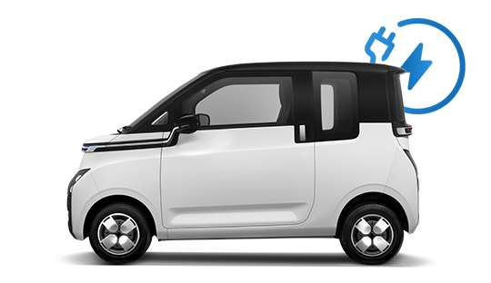

.png)
.png)
Tentang Wuling Motors
Wuling Motors (Hanzi: 五菱汽车) adalah sebuah merek kendaraan asal Liuzhou, Guangxi, Tiongkok. Merek ini dijalankan oleh perusahaan Liuzhou Wuling Automobile Industry Co., Ltd., sebuah perusahaan patungan oleh Wuling Group dan Dragon Hill Holdings Limited (HK0305). Wuling Motors memproduksi kendaraan seperti mobil MPV, mesin kendaraan, dan suku cadang kendaraan.
Wuling Motors kemudian melakukan joint ventures bersama dengan SAIC (Shanghai Automotive Industry Corporation) dan GM (General Motors) membentuk SAIC-GM-Wuling atau SGMW asal Tiongkok yang lahir pada tanggal 11 November 1982. SGMW berhasil mencapai volume penjualan hingga 2,13 juta unit di tahun 2016 dan mendapatkan pengakuan global.
Pertumbuhan penduduk yang tinggi serta potensi perkembangan perekonomian yang berkelanjutan menjadikan Indonesia pasar yang tepat untuk berinvestasi, SGMW pun hadir melalui Wuling Motors. Di Indonesia, Wuling Motors mendapatkan izin pendirian pabrik di kawasan Deltamas, Kabupaten Bekasi pada tanggal 20 Agustus 2015 dan pembangunan memakan waktu selama kurang lebih 2 tahun dengan nilai investasi sebesar 1 miliar US Dollar dan konstruksi pabrik seluas 60 hektar.
Tanggal 11 Juli 2017, PT. SGMW Motors Indonesia atau Wuling Motors resmi beroperasi untuk produksi massal. Pada 22 Mei 2017, Wuling Motors meluncurkan seri kendaraan perdananya yaitu Wuling Confero dengan jenis kendaraan Mobil MPV. Kemudian, 8 Februari 2018, Wuling Motors meluncurkan jenis kendaraan keduanya, yaitu medium MPV, yang diberi nama Wuling Cortez.
Lini Produk Wuling di Indonesia
Wuling Confero
Confero menjadi lini mobil pertama dari Wuling Motors yang dipasarkan di Indonesia. Confero adalah mobil yang didesain untuk keluarga sehingga kenyamanan menjadi kunci utama, dengan kabin yang luas membuat kapasitas mobil cukup banyak. Dilengkapi 7 seater, captain seat, dan rear parking camera display.
Wuling Cortez

Cortez merupakan mobil MPV dengan teknologi tinggi. Spesifikasi Wuling Cortez dari segi performa mesin sudah disematkan turbocharger powerful 1,5 L yang diklaim mampu menghasilkan 140 hp/5.200 rpm. Selain itu, Cortez juga dilengkapi dengan electric sunroof dan juga captain seat.
Wuling Formo
Dipasarkan untuk menunjang kebutuhan usaha dengan kabin yang luas, rear wheel drive, 5-8 seaters, dan kapasitas bagasi yang besar.
Wuling Almaz
Almaz merupakan mobil yang sudah dilengkapi dengan berbagai teknologi terkini dan fitur-fitur mendukung seperti kursi luas, 7 seaters, level 2 advance driving assistance, voice command WIND (Wuling Indonesian Command), dan Wuling remote control app. Seri terbaru dari Almaz sendiri menggunakan teknologi hybrid yang mampu mengkonversi energi menjadi tenaga listrik.
Wuling Air EV
Air EV merupakan mobil listrik pertama keluaran Wuling Motors Indonesia yang ramah lingkungan, tidak meninggalkan emisi dan polusi. Dilengkapi dengan fitur easy home charging system, futuristic center console, integrated floating widescreen & smart start system.
Teknologi Wuling
IOV (Internet of Vehicle)
Fitur IoV atau Wuling Remote Control App dapat memberikan berbagai kendali dan mengakses berbagai fitur canggih dengan menggunakan smartphone melalui aplikasi MYWULING+.